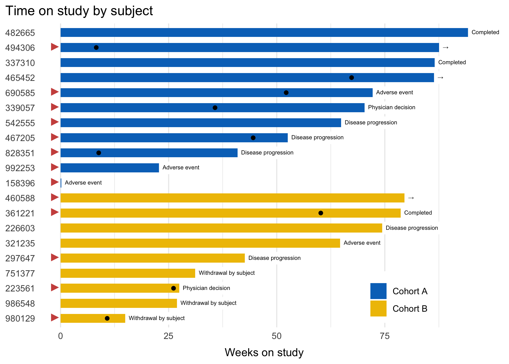

* Still in development
ggswimlane is a ggplot wrapper that simplifies the construction of swimlane plots, which are a common tool for showing patient trajectories through a clinical trial.
You can install the released version of ggswimlane from GitHub with:
# install.packages("devtools")
devtools::install_github("tgerke/ggswimlane")
library(dplyr)
library(ggplot2)
library(ggswimlane)
patient_disposition %>%
mutate(
reason_off_study = tidyr::replace_na(reason_off_study, "→"),
prior_drug = dplyr::case_when(
prior_drug == "Yes"~ "►",
TRUE ~ NA_character_
)
) %>%
order_swimlane(subject, weeks_on_study, cohort) %>%
ggplot() +
geom_swimlane(subject, weeks_on_study, cohort) +
ggsci::scale_fill_jco() +
geom_swimlane_text(subject, weeks_on_study, reason_off_study) +
geom_point(
aes(x = subject, y = partial_response),
na.rm = TRUE
) +
geom_swimlane_rug(x = subject, label_var = prior_drug, color = "#CD534C") +
theme_swimlane(legend.position = c(.8, .1)) +
ggtitle("Time on study by subject") +
ylab("Weeks on study")